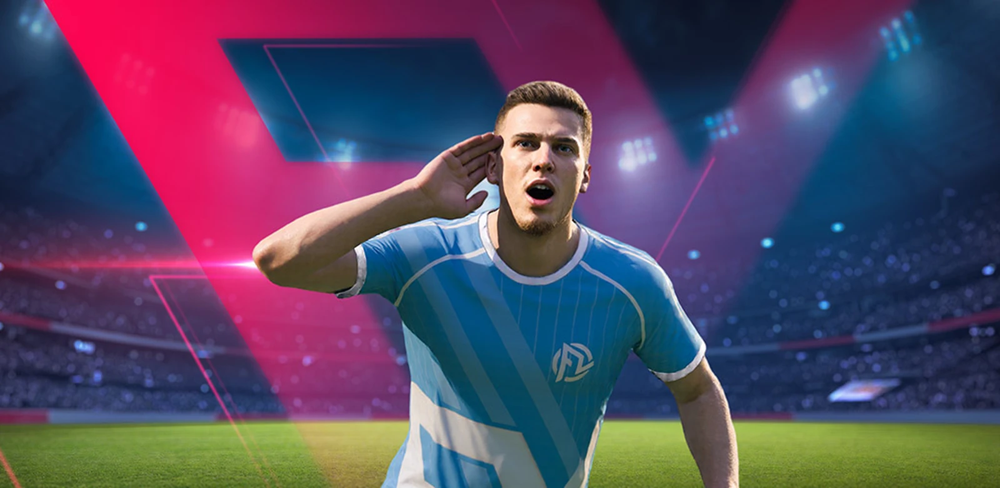
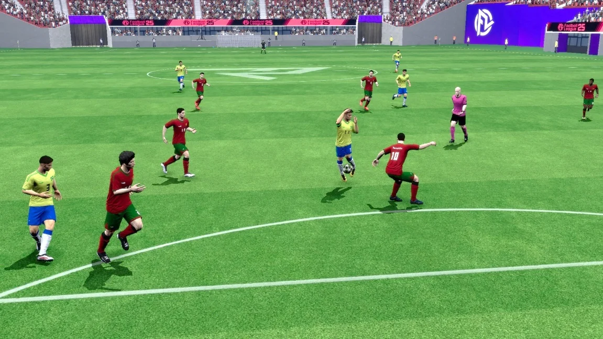
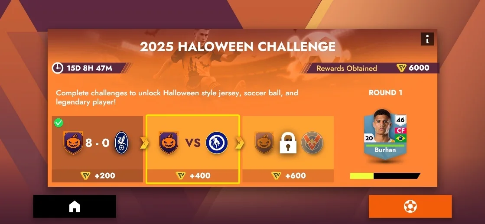
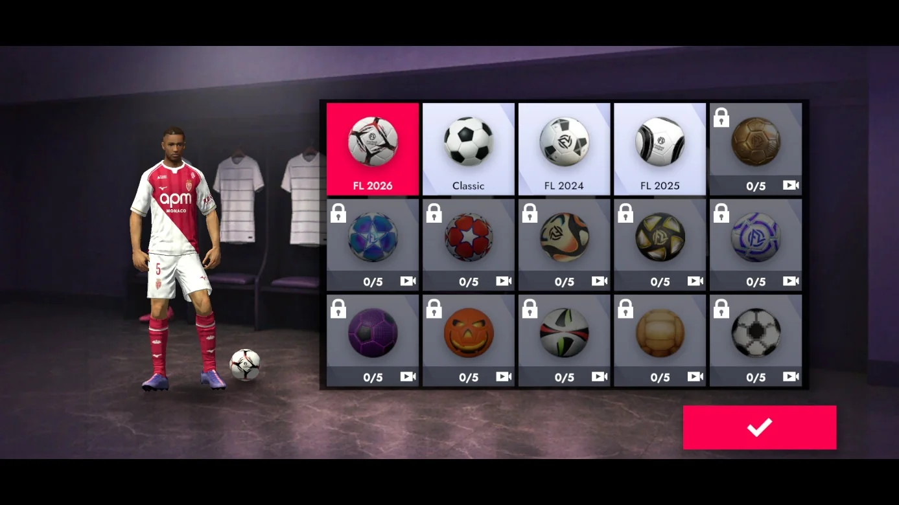
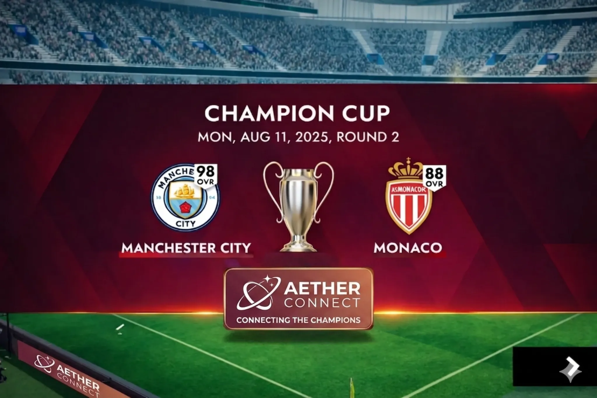
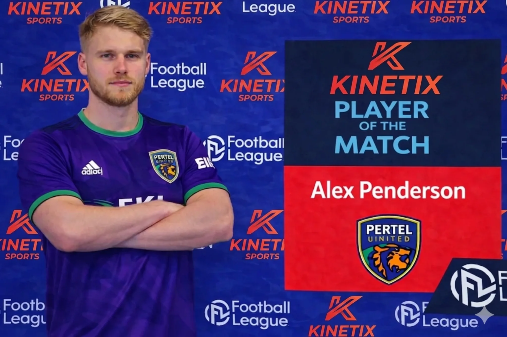
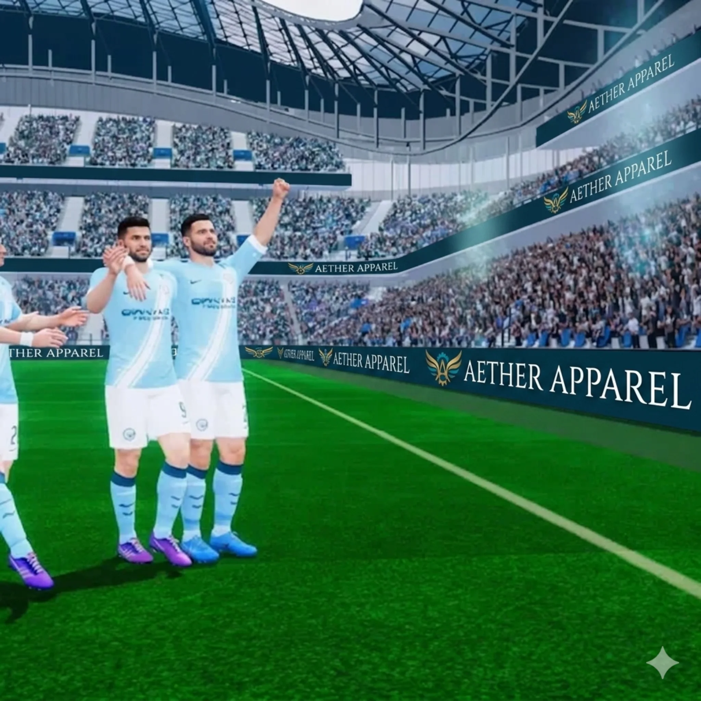

Premium, predictable inventory
- Pitch-side LED boards, scoreboards, replay frames
- Event takeovers, seasonal partnerships, always-on presence
- Region targeting and frequency control
Mobile Soccer is the media arm behind Football League 2026, building brand safe placements directly into live football gameplay. We help brands show up where players are fully engaged through broadcast style sponsorship designed for lean in attention, repetition, and recall.

As the publisher and development studio, we design brand presence directly into live match flow rather than relying on automated ad systems.
Broadcast level reach with time spent inside high focus match moments.
Proof of reach across a global football audience
Consistent chart performance across global markets
New moments and activations give players a reason to come back regularly
Brand visibility performs best when it appears inside the flow of play, across repeat sessions, and in football contexts that feel natural to the player experience.

Players are actively engaged in the match, making brand exposure more focused and more memorable than passive media environments.

Live events, challenges, and recurring match moments give brands multiple opportunities to appear across the player journey.

Brand presence appears in football environments where players already expect clubs, kits, match presentation, and sponsor visibility.
A three layer sponsorship model built to feel native to football matchday and stronger than traditional interruptive formats.

Our flagship format, giving one partner a cohesive branded presence across the moments that command the most attention.

Flexible branded moments inside gameplay, presentation, and surrounding match experiences tailored to each partner.

Persistent in game inventory that compounds visibility over time through repeat gameplay and repeated audience exposure.
Strategy, planning, and measurement delivered through a direct studio partnership.
Attention is naturally higher during live play. We break down why repetition and context builds recall.
Direct partnerships give creative approvals, placement rules, and predictable inventory.
Impressions are table stakes. We outline reporting that fits gameplay exposure and campaign objectives.
Got a global challenge or a multi market brief? Drop us a line.
Share target markets, flight dates, and the kind of placement you want (LED boards, scoreboard, replays, seasonal takeovers).
1232 Venture Drive #11-31
Vision Exchange
Singapore 608526